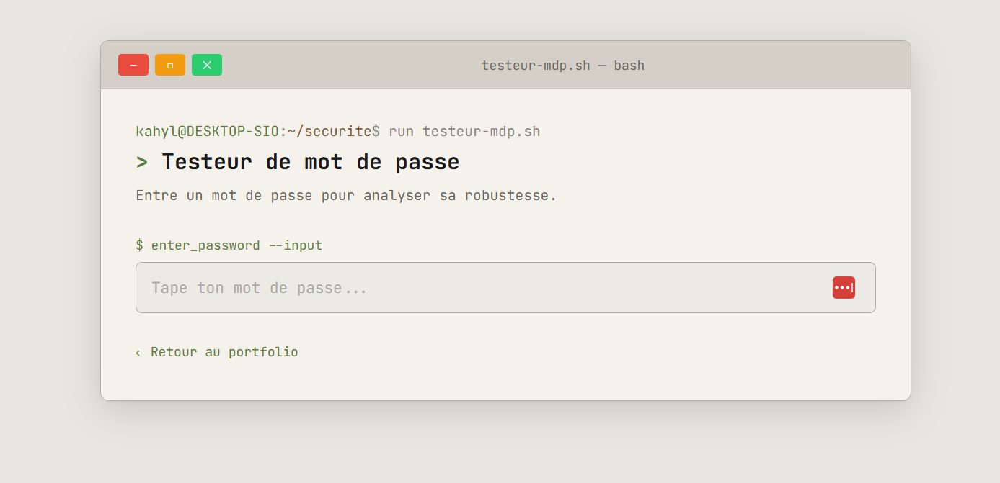
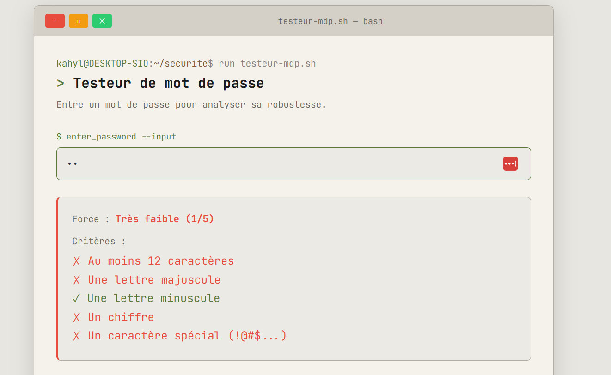
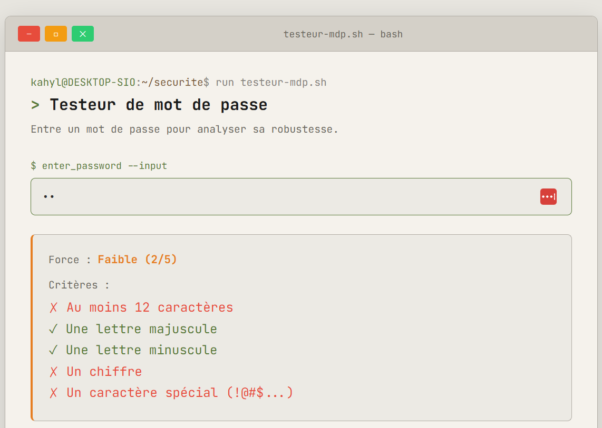
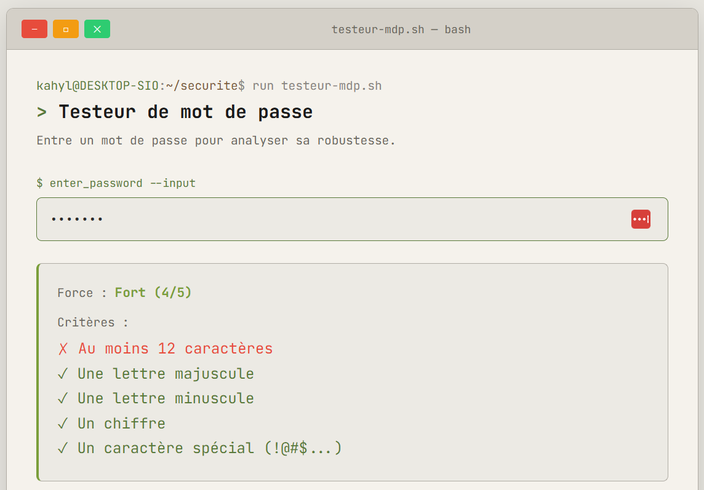
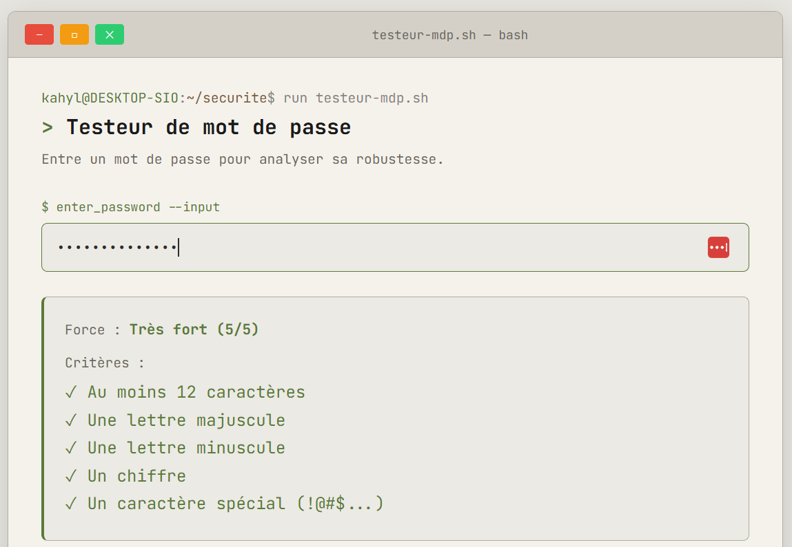
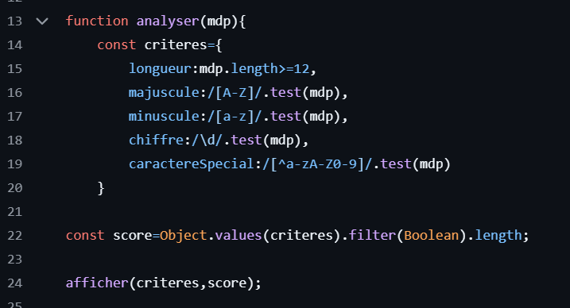

Testeur de mot de passe
Projet web permettant d’évaluer la robustesse d’un mot de passe. L’application analyse plusieurs critères comme la longueur, les majuscules, les chiffres et les caractères spéciaux.
Pourquoi ce projet ?
Ce projet permet de mieux comprendre les bases de la sécurité des mots de passe. L’objectif est de montrer qu’un mot de passe fort doit être assez long et contenir différents types de caractères.
Ce que fait le projet
🔐 Saisie du mot de passe
L’utilisateur entre un mot de passe dans un champ prévu à cet effet.
📏 Vérification de la longueur
Le programme vérifie si le mot de passe contient assez de caractères.
🔠 Analyse des caractères
Le script vérifie la présence de minuscules, majuscules, chiffres et caractères spéciaux.
📊 Score de sécurité
Un score est calculé selon les critères validés par le mot de passe.
🟢 Niveau affiché
Le résultat indique si le mot de passe est faible, moyen ou fort.
💡 Conseils utilisateur
L’application peut aider l’utilisateur à améliorer son mot de passe.
Captures du projet
Interface du testeur de mot de passe

Exemple avec un mot de passe Très faible / faible


Exemple avec un mot de passe fort / Très fort


Extrait du code JavaScript

Ce que j’ai appris
Conditions JavaScript
Utilisation de conditions pour tester plusieurs critères de sécurité.
Expressions régulières
Utilisation de règles pour détecter les majuscules, les chiffres et les caractères spéciaux.
Manipulation du DOM
Affichage dynamique du résultat selon le mot de passe saisi par l’utilisateur.
Sensibilisation sécurité
Compréhension des bonnes pratiques liées à la création d’un mot de passe sécurisé.